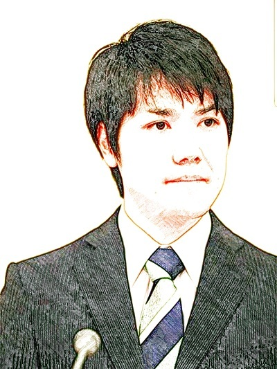

| 2019年3月の歴史: 成功は失敗の父 | |
| 陳列館 | |
| (2019) | |
201 9年3 月の歴史
陳列館

初めに
何故、日本では天皇制が存続しているのだろう？などと書きだすと、ネトウヨは「天皇制」というものは無い、「皇室制度」があるだけだと反論するが、どちらも同じである。はっきりしているのは、天皇は、世界中の宗教同様、自然発生的なものでは無く、明らかに統治の方便として時の為政者が作り出した政治制度である事だ。一見、それはアジアの専制君主、とりわけ中国古代の皇帝のバッドコピーとも思えるが、中国では秦の始皇帝以来、革命の繰り返しで、前王朝が否定され続けているのに対し、その国では、僥倖により「万代一系」という神話が醸成されている。勿論、それは虚構であるが。しかし、天皇制を「国民の心の故郷」だの、神聖化した言い方は、明らかに無理があろう。古来、天皇は実権を握る武装勢力（北面の武士だのの、征夷大将軍だの、陸海軍大将だの、内閣総理大臣等々）の隠れ蓑、シンボルとして機能し続けてきた。勿論、天皇は存亡の危機に至った事もある。その意味で、血統も怪しいものであるが、その時その時の為政者に取り、天皇は使い勝手が良い存在で、神社・神宮を人々に参らせ、単なる人間を神格化し、ある時は暴力である時は、無言の圧力で人々を強制的に「日本」に縛り付けてきた。また、人々は、この貧しい国土に縛られ、収入も少なく、その時の為政者に職を与えてもらう（実際は収奪されている訳だが）、それ以外に生きるすべがないところから、いつの日か天皇制に馴致され、恰も、本心から宗教に帰依させられている体で、天皇制を肯定し、表明上は崇拝している。太平洋戦争敗戦前に、「不敬罪」という世にも稀な悪法で、天皇を傷つける言動だけで、極刑に処せられたものだ。残念ながら、そうした集団幻想は今尚、綿々と続いている。一方、海外の眼からすると、天皇なる呼称はそれこそ、不敬・不遜である。その国だけが 特別だ、他の地域とは違うのだという夜郎自大的思想をまき散らせているのであり、平和な時でも、その国は生得的に敵視の対象、或いは揶揄の対象になっている。
ところが、昨今、そうした天皇制も綻びが生じている。その国の業病である少子・老化の波が、「皇室」にも浸食して来ており、「世継ぎ＝男子」が欠乏しており、頑なに女系の天皇即ち、一般人の婿を天皇にしないとの規範に雁字搦めに縛られ、唯一の絆である血統が絶えようとしている。かてて加えて、元号と称する無意味で、非効率的な制度、何とも曲調と歌詞が暗い国歌、君が代、その他諸々の国家財政を益々悪化させる諸行事など、正 に 2 1 世紀にもなって恥ずべき事態が顕在化している。
そんな中で、現天皇の二男の長女が、本口絵にある小室圭なる男に誑かされ、一度は婚約寸前になったが、さすがに問題山積の中、それをサスペンドされている。今日現在、その解決を見ていないが、現皇室全体を巻き込んでいるので、成之が注目される。その意味で、天皇制は今やゴシップそのもの、エンターテイメントと堕しているが、それにしてもその代償としての税金の浪費は如何ともしがたく、その国の国民のお目出度さの象徴を為している。奴隷の法悦状態は、戦場で地獄を経験して初めて解けるのである。
その国の天皇制を考えた場合、人間の業ともいうべき、血筋しか信頼できない 、 Nepotis m の最たるものと考えられる。それが、政界・経済界・その他諸々の職業で、世襲制を招き、それが、如何なる弊害をまき散らしているか、皆、自覚しているものの、根絶できない、そればかりか、近年、保守的な考え方の蔓延と共に増長している。正にその象徴としての天皇制、諸悪の根源・宿唖・末期癌である事は今更指摘するまでも無い。
陳列館
目次
３月１日（金）三・一独立運 動 10 0 周年記念日
２日（土）安倍「私は国家」発言
３日（日）松下尚美「日本は何も悪い事はしていない」発言
自民党田畑毅婦女暴行で議員辞職
沖縄辺野古基地、住民投票で圧倒的反対なるも、政府は無視
４日（月）二階小池支持発言、後、撤回
５日（火）国会偽装統計で「虚偽は認めるが、組織的隠ぺいでは無い」
６日（水）ゴー ン 1 0 億円保釈、変装・スズキ車で弁護士事務所へ
安倍「法の支配」の対義語を知らず
７日（木）景気後退は発表、政府発表は誤りと判明
6 9 歳老人、若い既婚女性を覚せい剤殺人
８日（金）大阪ダブル選挙、保守分裂
９日（土）佐渡の水中翼船、鯨と衝突、怪我人多数
１０日（日）福島第一原発事故対応費 用 8 1 兆円（従 来 2 2 兆円）
１１日（月）有村架純姉整形、骨を削る
１２日（火）福生病院で透析中止問題広がる
１３日（水）ピエール瀧コカインで逮捕
東大 文 I I が、入試問題点数等で 文I を逆転
「エムフェイス」投資詐欺、被害 額 18 0 億円
麻生「支持率を上げる為に、偽装」と国会で漏らす
１４日（木）「昭和天皇実録」に誤 り 500 0 か所
１５日（金）スキー・スノボ人 口 1 0 年 で 186 0 万人か ら 56 0 万人に減少
ニュージーランドのモスク で 4 9 人襲撃死亡（その後死亡者増加）
１６日（土）安倍４選、反対 が6 割
１７日（日 ） JO C 竹 田6 月に辞任必至に
１８日（月）内田裕 也 7 9 歳で死亡
１９日（火）モザンビークでサイクロンによる死 者 100 0 人強
２０日（水）秋田の地下上昇 、 2 7 年振り
JO C 竹田退任会見
「消えた留学生 」 140 0 人、東京福祉大学
大坂なおみ契約不履行問題
東京地検前で内外国人夫婦殺人、自殺
２１日（木）厚労省課長武田康祐韓国で暴行、拘束
イチロー引退
２２日（金）武田暴行事件 、 NH K で報じず、韓国で起訴か
２３日（土）秋田美術大卒業式でイージスアショアに言及、大学側で削除
２４日（日）自衛官カンボジアでタクシー強盗、殺人
２５日（月）桜田、震災後も東北自動車道通行可だったと発言
２６日（火）トランプのロシア疑惑、玉虫色報告へ
２７日（水）厚労省職員、韓国で逮捕発覚（取り調べに非ず）
パイオニア上場廃止へ
荒川で屋形船炎上、東京の桜満開へ
２８日（木）萩原健一 、 GIS T （消化管間質腫瘍）で死亡、大麻・コカイン常習者
２９日（金）カープ開幕戦で勝利、丸四三振
３０日（土）米、メキシコ国境閉鎖へ
３１日（日 ） TB S 宇垣美里アナ退社
●前世期以前からの遺物：現金・印鑑・郵便物
●三大弊害：天皇制・議会制民主主義・結婚
●オレオレ詐欺興国論
３月１日（金）三・一独立運 動 10 0 周年記念日
この記念日を前にして、外務省は韓国への渡航注意を喚起した。しかし、式典は平穏に終わり、何事もなかった。代わりに、この月、口述する様に、厚労省の役人がソウル金浦空港で暴行、逮捕された。即ち、韓国に対する加害者は、過去も未来もその国の反動勢力であり、差別意識も彼らが根絶やしになるまで、消滅する事は無い。しかし、永年、かりそめではあるが、その国は韓国に対して経済的に優越感を持っていたが、間もな く1 人当た り GD P で凌駕される。そして、南北統一国家が出来、中国を中心に強固な経済圏が形成され、その国が駆逐される日も近いと言える。それは、永年に亘る、鬼胎としてのその国の存在が名実ともに消滅する事であり、歴史の必然と言えるのかも知れない。活該である。
２日（土）安倍「私は国家」発言
森羅万象に続く、世迷言第二弾。問題はこうした発言を許す、周辺の取り巻きの態度であり、それが、保身から来るものとはいえ、善悪が判断できない、ファッショ国家が露呈した事だ。そして、その国は政治的・経済的・軍事的にカタスロフィに向かっていく。過去から何度も繰り返された歴史である。そして、無睾の民が犠牲になり、支配賞はしぶとく生き残る。正に、「国体明徴」である。これも、そろそろ根絶やしにすべきである。そうして、初めてその国の夜明けを迎える。
３日（日）松下尚美「日本は何も悪い事はしていない」発言
差別・虐殺は何が起こすか？それは、為政者の右翼的教育を触媒として、それを盲目的に受け入れる、無知の民である。従い、加害者も被害者も無い。一見、対立する二者と見られる双方の合作である。今回、松下の発言は何の不思議も意外性もない。大加害者であるにも関わらず、差別等の罪科の意識が皆無なのである。従い、自らは潔癖だとの確信の下、
為政者から刷り込まれた思想を盲目的に信じ、被害をまき散らすのだ。最後まで、自分の内なる悪に気づかない。
同日 自民党田畑毅婦女暴行で議員辞職
その国の男子の草食化が叫ばれているにも関わらず、その奥でどす黒い性欲がふつふつと沸騰している。そして、かりそめの権力を持つものは、近場の対象に襲いかかる。それは、正にサバンナで繰り広げられるジャングルの様相であり、厳罰が必要だ。ジャングルでは実は肉食獣が百獣の王ではなく、一見平和的な草食獣（象・縞馬等）の方が強い。司法の力で、本当は弱い、叫ぶだけの肉食獣に厳罰を課せば良い。
同日 沖縄辺野古基地、住民投票で圧倒的反対なるも、
政府は無視
やはり、その国は民主国家でも何でも無い、少数決（正確に言えば独裁）のファッショ国家である事が露呈した。しかし、その産みの親は、無知蒙昧で、長いものに巻かれろ体質の一般の民草である。確かに、徒に権力を振るい、その権力欲を満足させ、自己の親族・取り巻きの利益だけ考えて行動するのは、人間の本能に適う生き方であろう。しかし、その独裁の陰で、多大なる経済的・人的被害を齎す事がセットになっているのだ。そんな独裁を許すからいけないのだ、と言えば簡単だが、問題は単純ではない。為政者は四六時中、体制維持の為の方策を考えており、武力を磨き、いつでも反対派を弾圧する用意がある。そうなると、それに対抗するのは理性ではなく、正に「理力」である 。 Be the Force with
you ! である。
４日（月）二階小池支持発言、後、撤回
この二階という呆け老人は確信犯的に困った存在だ。そもそも 、 8 0 歳になっても引退させ
ないのは規定違反である。しかも、目的の為に手段を択ばない、その言動を、嬉々として
感受する、小池・細野は、権力にしがみつく醜い小物である。しかし、このレベルの小物
は選挙で落とす事が可能なので、有権者はたとえ、自らの利益を毀損しても、落とすべき
である。
５日（火）国会偽装統計で「虚偽は認めるが、組織的隠ぺいでは無い」
詭弁もここに極まれりである。その国は必ず破綻するが、為政者は、サバイバルの為、何
をすべきかだけを考えている。
６日（水）ゴー ン 1 0 億円で保釈、変装・スズキ車で弁護士事務所へ
後日の弁護士の弁明で判明したが、これは、報道陣に対する偽装だったそうだ。しかし、
望遠レンズと、ドローンの発明で、その偽装は簡単に見破られた。正に技術の勝利である。
従い、茶の間の視聴者は全てを把握したが、現場に詰めていた T V 局のリポーターのみは
事態が把握できなかった様である。正にパラドックスと言えよう。
同日 安倍「法の支配」の対義語を知らず
安倍自身が無知の塊であるから、知らなくて当然。質問するだけ、無駄である。
７日（木）景気後退の発表、政府発表は誤りと判明
その国は、二重統治だ。政府発表と真実は真逆、正誤も真逆、おまけに善悪も真逆と来ている。しかし、その矛盾も一目瞭然であり、リアルタイムで真相がばれる。
同日 6 9 歳老人、若い既婚女性を覚せい剤殺人
被害者は、イケメンの夫がおり、本人は美貌であり、何一つ不自由がない筈なのに、老醜の目立 つ DQ N に身を委ね、覚せい剤を飲まされ、揚句に死亡する。何故か？金銭だ。金銭が、現世で万能である事を示す一例だ。
８日（金）大阪ダブル選挙、保守分裂
永らく猖獗を極めてきた悪名高き、安倍政権だが、やはり、上手の水が漏れる、即ち 、 201 9 年の地方選挙で崩れる。即ち、保守内分裂だ。大阪しかり、北海道、福岡しかりだ。
９日（土）佐渡の水中翼船、鯨と衝突、怪我人多数
その国近海での大型魚類、特に鯨の接近が散見されている。これは、天変地異の表れである。南海トラフ地震、近し、である。
１０日（日）福島第一原発事故対応費 用 8 1 兆円（従 来 2 2 兆円）
これこそが、天文学的損失である。お前は、もう死んでいる。
１１日（月）有村架純姉整形、骨を削る
♪生きてる限りは、どこまでも、削り削って、痛いのよ（中略）骨まで骨まで削って欲しいのよ
１２日（火）福生病院で透析中止問題広がる
現在の医療費破綻の中で、当然起こるべき議論。脳死患者の生体移植を認めない限り、止められない議論だ。
１３日（水）ピエール瀧コカインで逮捕
安倍政権失政を隠匿する為の犠牲者。
同日 東大 文 I I が、入試問題点数等で 文I を逆転
理所当然と言う現象だ。日本経済の崩壊→同時に起こる政治の堕落→既存の価値観の崩壊→信念危機、一言で言って、誰も役人になりたくない。外資系の金融機関が一番。
同日 「エムフェイス」投資詐欺、被害 額 18 0 億円
騙される方が罪である。
同日 麻生「支持率を上げる為に、偽装」と国会で漏らす
余りにも正直。最低限の守秘義務する守れない、アルツハイマーの進行した哀れな老人。
１４日（木）「昭和天皇実録」に誤 り 500 0 か所
古来、繰り返されてきた歴史の偽造の一例。
１５日（金）スキー・スノボ人 口 1 0 年 で 186 0 万人か ら 56 0 万人に減少
未だに 、 56 0 万人もいるのか、疑問である。これもデータ偽装か？それにしても、若年層
はアウトドアでは無く、インドア でe スポーツに励む。そして、下半身の筋肉が衰え、人
その物が変質していく。人間は頭脳だけで生きていけるのか？しかし、生物としての人間
の脳はキャパが少なく、やはり、無限の容量を持 つ A I が人間を超えていくのは間違いない。
それに抵抗しても、無駄というものである。
同日 ニュージーランドのモスク で 4 9 人襲撃死亡（その後死亡者増加）
永らく続いたモスレムによるジハードがキリスト教徒に伝染した。
そもそも、テロは、誰が元祖かは関係ない。米国の同時多発テロだって、ウサマ・ビン・
ラディンは実在の人物か不明であるし、傀儡である可能性は捨てきらない。また、そのテ
ロ自体も不自然な現象が多い。古来、戦乱・動乱は、表面上の被害者が、実は加害者に仕
掛けて勃発したものが多いと思われる。結果は、出来レースというもので、仕掛けた方が
必然的に勝利を収める。しかも、初めから仕組んだものだというのが発覚しなければ、成
功だ。かくして、歴史というのは勝者が捏造した事象に満ち溢れた物となる。
１６日（土）安倍４選、反対 が6 割
当然の事ながら、最終的に自民党に投票する奴隷的有権者の群れ。これは、古来繰り返された、利益共同体の論理が働いており、建前上、民主主義なので、口頭で反対するのは自由、しかし、実際の投票行動は逆という事になる。かくして、共同体の中で、何も進歩は産まれない。自業自得の繰り返しである。
１７日（日 ） JO C 竹 田6 月に辞任必至に
蜥蜴のしっぽ切りながら、本体（＝オリンピック開催）を処分するのが先である。数千億円しか利益の出ないイベントに数兆円掛ける意味があるのか？ある。それは、税制破綻を早める事だ。オリンピック開催は正に、太平洋戦争の対米開戦に同じ。当時の日米双方の為政者は、開戦に安堵しただろう。これで、戦後の米国中心の世界秩序が確保され、日本は、人口調節と生産力調節が同時に実現し、戦後は米国の属国になる事が決定したからだ。しかし、最大の損失を見逃していた。それは、戦 後 7 0 年後に発覚した。それは、日本の老人化だ。即ち、太平洋戦争前後に生まれた世代が、死なないのだ。福祉国家という綺麗事が聞いてあきれる。政治と医療コングロマリットが結託し、患者を量産し、無駄な医療に膨大な税金を注いでいるだけだ。長寿とは人工的に惹起された、最大の災害だ。それにより、医療費の増大で、その国は滅亡を迎える 。 202 0 年は、冗談抜きに最後の宴となる。オリンピックなど、即刻、返上する。これが正解。今やこのイベントは、外れくじを引く、ホットポテトと化している。では、誰にポテトを渡すか？良いアイデアがある。インフラの余っており 、 BREXI T で瀕死のロンドンに開催を依頼する。その選択肢しか残っていない。
１８日（月）内田裕 也 7 9 歳で死亡
永年の常識が覆った。まず、老齢の夫が逝く。それから、数年の穏やかで、幸福な寡婦の時期を過ごした妻が逝く。このパターン。それが、昨今は、妻が壮絶な病死を遂げた後、間もなく、夫が力尽きて倒れる。歴史の大転換だ。
１９日（火）モザンビークでサイクロンによる死 者 100 0 人強
世界は、人口調節に動いている。自然の摂理だ。それに従う国家は生き延びる。それに反して、無理やり延命している国家は滅亡する。
２０日（水）秋田の地下上昇 、 2 7 年振り
政権延命の為に、あらゆるデータ偽装を仕掛けるものだと、感心する。またそれを真に受ける無知愚昧の民。
同日 JO C 竹田退任会見
ふざけている。退任ではなく、解任であろう。そして、オリンピック自体も贈賄による不正招致で返上、その国の政府及び 、 IO C に多額のペナルティが課せられるのだ。
同日 「消えた留学生 」 140 0 人、東京福祉大学
哀れな、外国人奴隷的留学ビジネス。その国も、留学生など受け入れる余裕もない、破綻間近である。その国に来ている留学生、就業生は、沈みかけたタイタニックに好き好んで乗り合わせた哀れな乗客に同じ。こうしたニュースも、後から聞けば、今は昔の物語。
同日 大坂なおみ契約不履行問題
まあ、有名人税の一種。詐欺とは言わない。それよりも、大坂なおみが、今後米国代表に鞍替えした時のその国民のリアクションが楽しみだ。それまでは、「その国の誇り」だの「××魂」だのと持ち上げていた輩が 、 "Bloody Dirty Bitch ! " "It smells Niggar" だのと彼女を罵るだろう。それは、火を見るよりも明らかである。
同日 東京地検前で内外国人夫婦殺人、自殺
犯罪は、裁判所で裁かれる物であるが、裁判所で犯罪が行われる事もある。実に効率的。しかも、今回のケースでは、加害者も被害者の同時に死亡。長引く捜査や裁判に対するアンチテーゼを示したもの。今後は、裁判所などいらない。単なる空地で、加害者と被害者が死闘を繰り広げるのが、社会的費用を節約する最善の方法だ。
２１日（木）厚労省課長武田康祐韓国で暴行、拘束
後に、取り調べでは無く、逮捕と判明。恥の上塗り。神風特攻隊の生まれ変わりだ。
タケダという姓は呪われている。禁忌にすべきである。
同日 イチロー引退
まあ、引退ビジネスだろう。安室奈美恵のケースと同じ。イチローの打率は、足の速さと、左打者であるというアドバンテージに過ぎない。偽装打率、フェイク名選手。引退会見で人種差別の存在を示唆していたが、実態はそうではない、その打撃スタイルに関してである。余りにも、欺瞞的・利己的なスタイルを、心ある現地野球愛好者に指弾されていたに過ぎない。
２２日（金）武田暴行事件 、 NH K で報じず、韓国で起訴か
更に恥を重ねる。韓国サイドから、国交断絶を言い渡されても、自然である。
２３日（土）秋田美術大卒業式でイージスアショアに言及、大学側で削除
学問の自由、自治など初めから無し。その傍証をまた、示した。しかし、それにめげずに、
取り敢えず、トライだけはし、ニュースとなった女子大生は、賞賛に値する。国民栄誉賞
なるものは、彼女に授与されるべきだ。
２４日（日）自衛官カンボジアでタクシー強盗、殺人
その国の輸出品は、犯罪が主流となるだろう。今回の強盗殺人、先日の小役人の暴行、そして、オレオレ詐欺集団のタイでの逮捕など。犯罪は、是非、国内で完結し、海外の民衆を巻き込まないで欲しい。
２５日（月）桜田、震災後も東北自動車道通行可だったと発言
本当に無知なのだろう。論評に値せず。
２６日（火）トランプのロシア疑惑、玉虫色報告へ
当然の帰結だろう。反対勢力なら別だが、官が官を裁けない。自らの保身の為。民が権力者を倒す事はあるが、昨今は、民も保身の為、権力者をそこまでは追い込まない。
２７日（水）厚労省職員、韓国で逮捕発覚（取り調べに非ず）
嘘は、すぐにばれる。これこそ、情報化社会。ネットの勝利。
同日 パイオニア上場廃止へ
元々、胡散臭い企業であった。レーザーデスクなど、正に邯鄲の夢。
同日 荒川で屋形船炎上、東京の桜満開へ
天麩羅を揚げずに、船を丸揚げにしてしまった。
２８日（木）萩原健一 、 GIS T （消化管間質腫瘍）で死亡、大麻・コカイン常習者
ピエール瀧より悪質には間違いないが、産まれた時期が良かった。
２９日（金）カープ開幕戦で勝利、丸四三振
金銭では、勝利を買えない。丸は、シーズン途中で引退が望ましいだろう。広島の恨み、骨髄である。多額の移籍金は、全て無駄。それにしても、ジャイアンツなるもの、罪深い。
３０日（土）米、メキシコ国境閉鎖へ
未だ、国交があるのが不思議である。
３１日（日 ） TB S 宇垣美里アナ退社
出る杭は打たれるの、典型。
（追加）
●前世期以前からの遺物：現金・印鑑・郵便物
現金は、官制なので、それを廃しすれば、税金の節約となる。人員もリストラできる。
印鑑は、織田信長当たりが、開始し、当初は、いちいち花押を書かないで済むという効率策であったが、今や無用の長物というか、煩雑な手続きの象徴と化している。その国の年号と同時に廃止。書面による郵便物もしかりである。
●三大弊害：天皇制・議会制民主主義・結婚
天皇制は、その国の保守勢力が生き延びる為の最後の砦である。民衆にとって、何のメリットも産まない。海外から見れば、嘲笑に対象でしかない。議会制民主主義も、政治屋の保身策・延命術に他ならない。実際は、多数派による独裁を許しているが、建前上、反対勢力も認めているので、壮大な茶番劇、立法・行政の非効率化を促進している。また、司法も行政に寄り添い、独立していないので、三権分立など、ユートピアである。
結婚は、男女の結びつきという、そもそも動物の本能に源を発しているのだから、その大本に戻るべきなのである。現代は、アフターピルなども存在するから、人口調節などを心配する必要は無い。それより、不自然な結婚制度が生む弊害をこそ、廃するべきである。
●オレオレ詐欺興国論：
アポ電という新語が生まれた。直接、電話で資産状況を確かめ、家に押しかけ、強盗、時には殺傷に及ぶという、正に原点に戻った犯罪だ。引っかかるのは、金品だけでなく、生命も奪う事だ。対象が老人であれば、老人化の解消に一役買うが、必殺仕置き人的な大義名分に乏しいとこらが、少し気になる。やはり、知恵を尽くして、金品のみ奪うのが望ましい。それも、大金を持ちながら、市中に流通させない老人に対する戒めとしてだ。本来、国家権力がそうした老人に課税の形で、召し上げるのが筋であるが、老人の支持を失うのは恐れるあまり、何もしない。そうした行政に代わり、純粋民間のオレオレ詐欺集団が義賊宜しく、老人の死金を、市中で有効に流通させるのだから、この犯罪に関しては、亡国的でなく、興国的である。斯界の、今後のスマートな発展に期待したい。
一方、警察のアンチキャンペーンは、その失業対策で税金の浪費だから、即刻止めるべきである。
（4 月に続く）